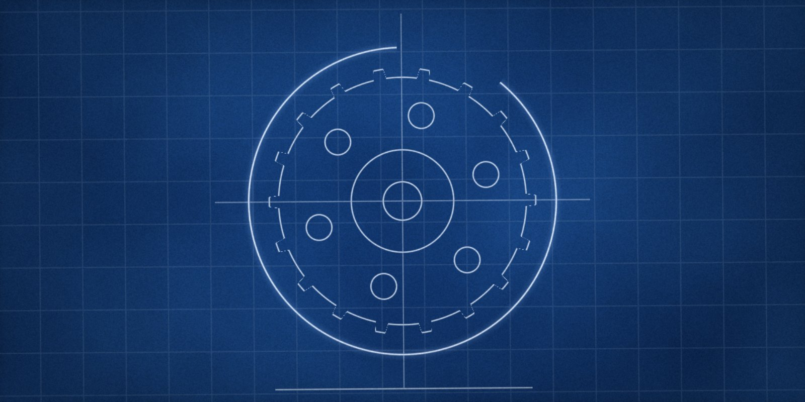
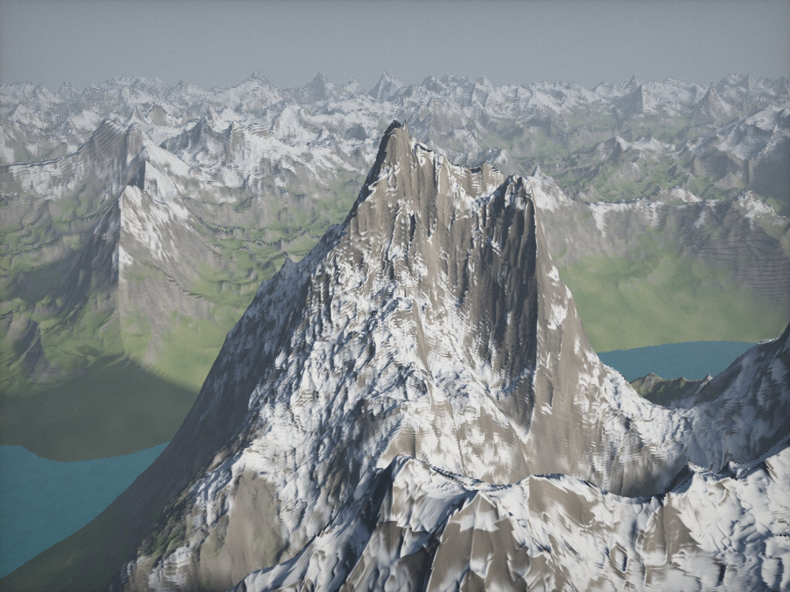
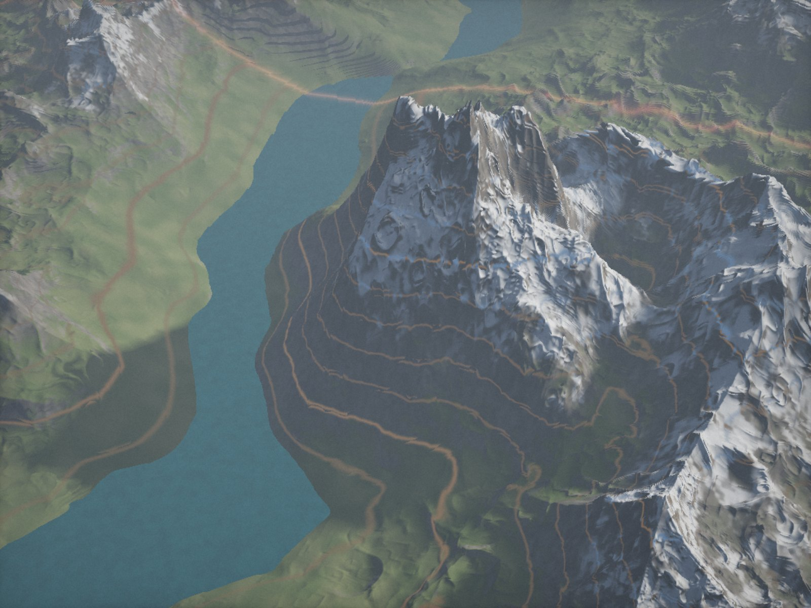

Everything for your next project, your research, your services and your team.

SideForge is the workshop behind your work: an assistant that computes with real data, an IDE with a real terminal, tunnels for anything running at home, Linux desktops in the browser, 3D scans and quantum computing. One login, one bill, encrypted from the ground up.
14 days free · No credit card required · Cancel anytime

Venura 6.5 arrives end of November
Think deeper, stay with it longer, check more thoroughly. The successor to Venura 6 for Code, Science and tasks that take more than one attempt.
More about Venura 6.5SideAI
An assistant that calculates instead of guessing
Chat, Code, Science, Cowork and Design in one interface — on real data, with real Python and sessions that can last for hours.
The models
One line, three steps. If you work with Venura 6 today, you switch without rebuilding anything.

AvailableVenura 6
Today’s deep tier: architecture, debugging and long derivations, included in your plan.
Open
End of November 2026Venura 6.5
More stamina on long tasks, cleaner tool chains and its own review pass before every answer.
Open End of 2026
End of 2026Sintulus 6
The strongest tier, rebuilt — for research, hard code and work that takes hours.
OpenPreview · End of 2026
Sintulus 6
Our strongest tier, rebuilt from the ground up. For research with real computation and review, for code at its hardest points and for work that takes hours rather than minutes.
Everything in one place
Each tool is built in-house, so they share one login, one storage and one invoice.
SideAI
Assistant and agents that compute with real data instead of guessing.
Open BuildForge IDE
Editor, real terminal, private database and live preview — from empty folder to running application.
Open AI & ScienceQuantum
Build circuits and run them on real hardware, with a learning track alongside.
Open AI & ScienceScience
Proteins, cells and molecules directly in the browser — Python really computes.
OpenOther platforms sell pre-bundled tools under one roof. We build each tool ourselves — so they share a login, a storage and an invoice, instead of ignoring each other.
Frequently asked questions
What is SideForge?
SideForge is a Swiss platform that bundles infrastructure tools for developers, teams and learners under a single account: encrypted port tunnels and an edge network, cloud infrastructure, VM and game server hosting, an AI assistant with a scientific work environment, a quantum lab, a login service for external apps, and cloud storage with a public interface.
What does SideForge cost?
The Starter plan is permanently free and requires no credit card. Professional and Enterprise are billed monthly and can be cancelled at any time. Students receive two years of Professional for free after verification.
Where is my data processed?
By default in data centres in Switzerland and the European Union. Every proxied request is encrypted with AES-256-GCM, the connection runs over TLS 1.3. The operator is Sideforge AG, headquartered in Zürich.
How do I make my localhost publicly reachable?
With Port Hosting: install the client, specify the local port, done. The service is then reachable via encryption on its own subdomain at sideforge.ch — without port forwarding on the router and without a static IP address.
How does SideForge Science differ from a chatbot?
The numbers either come from one of 21 specialist databases or from a Python calculation that actually ran in an isolated container. Next to each figure it says which of the two it is. A language model that recalls atom coordinates from memory is often wrong in the later decimal places — and you can’t tell from the figure.
Can I integrate SideForge into my own application?
Yes. “Sign in with SideForge” is an OAuth 2.0 login service like GitHub’s, the cloud offers a REST interface, and the AI is reachable via an OpenAI-compatible interface. The keys for all products are located in one place in the developer console.
What happens to the 10 percent for rainforest and ocean?
One tenth of every revenue is forwarded immediately upon payment — not calculated at year-end. The actual amounts transferred and the recipient organisations are openly listed on the “Rainforest & Ocean” page.